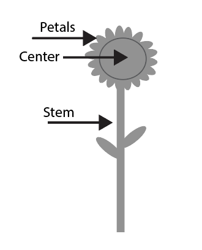

<!DOCTYPE html>
<html>
  <head>
    <title>Experiment</title>

    <script src="jspsych/jspsych.js"></script>
    <script src="jspsych/plugin-preload.js"></script>
    <script src="jspsych/plugin-html-keyboard-response.js"></script>
    <script src="jspsych/plugin-html-keyboard-responseMAS.js"></script>
    <script src="jspsych/plugin-survey-html-form.js"></script>
    <script src="jspsych/plugin-image-keyboard-response_MAS.js"></script>
    <script src="jspsych/plugin-image-keyboard-response_MAS_2images.js"></script>
    <script src="jspsych/plugin-image-keyboard-response.js"></script>
    <script src="jspsych/plugin-html-slider-response.js"></script>
    <script src="jspsych/plugin-html-button-response.js"></script>
    <script src="jspsych/plugin-survey-text.js"></script>
    <script src="jspsych/plugin-fullscreen.js"></script>
    <script src="jspsych/plugin-survey-multi-choice.js"></script>
    <script src="jspsych/plugin-survey-multi-select.js"></script>

    <script src="https://unpkg.com/@jspsych-contrib/plugin-pipe"></script>
   
    <script src="colorCalibration_srgb_featureDiag.js"></script>
    <script src = "ishiharaPlates.js"></script>
    <link href="jspsych/jspsych.css" rel="stylesheet" type="text/css" />

  </head>
  <body></body>

<!--------------------- Here is where the experiment is created ------------------------------------------->
  <script>


// ---------- UPDATE THESE AS NEEDED------------------//

    //General experiment info to update
    console.log("Updated last: 3/23-v1")

    var expServer = 1 // 0 = testing mode; 1 = on server 
        console.log("serverMode", expServer)

    var expType = 2 // 0 = SONA in-lab version; 1 = sona ONLINE ; 2 = CloudResearch online version (relevant for consent & debriefing)
        console.log("consent:", expType)

  
    var expTime = 30; // How long experiment will take in minutes
    var experimenterName = "mschoenl@highpoint.edu"  //Update to your contact info. this is presented if an error arises for a participantd
    var numConditions = 6; //Number of conditions. 
    var numTasks = 4;  //Number of experimental tasks (add 1 to include Color vision test)

    //CloudResearch completion code 
    var completion_code = "1DD48A672F";  //Code copied from mTurk Cloud Research Fixed completion code


     //Debriefing script- presents at very end of experiment. Describes the purpose of the experiment. Statements automatically included about receiving sona credit or entering a code for mTurk HITT. 
    // NOTE: if you have more than one between subjects condition, you MUST describe what the different conditions did/saw. 
    var debriefScript = `<p><strong>Great job! You have finished the experiment.</strong></p>
                <p>The purpose of this experiment is to examine how colors influence learning about objects.
                 <p> In task 1, you learned to identify 4 novel flower species that varied in their visual features. 
                  <br>In task 2, you indicated your associations between different colors and the different flower species. 
                 <br> Lastly, in task 3, you indicated how helpful different parts of the flowers were for sorting them in task 1. 
                 <p>Some participants saw flowers in which the petals were unique colors for each species, while the centers and stems shared colors across species.
                  <br>Other participants saw flowers in which either the centers or stems were the uniquely colored feature. 
                 <p>We are interested in whether you reported stronger associations in task 2 for colors that you saw on the more diagnostic (unique) features of the flowers.
            <br>This work contributes to a larger body of work aiming to understand how people form associations between colors and concepts from their experiences.`


    // Set background color  
    document.body.style.backgroundColor = "rgb(105, 105,105)"             

   


/*----------------------------------START OF EXPERIMENT TIMELINE: DO NOT CHANGE ------------------------------------ */

  // Pop-up box if people try to leave the page (including refreshing) 
    window.onbeforeunload = function() {
        return "If you leave or refresh the page, you will not be able to finish the experiment.";
    };

    //initialize and prompt global variables to record
    var jsPsych = initJsPsych({
      on_trial_finish: function(data) {
          if (data) {
            data.subjectID = subject_id;
            data.condition = whichCondition;
            data.workerID = workerID;
            data.startTime = start_time;
          }
      },
      on_finish: function() {
        if (expServer == 0){
          jsPsych.data.displayData();
          jsPsych.data.get().localSave('csv',subject_id+".csv", {flatten:true}) // saves to local device if not on server. 
        }
      }
    });


    //give subjects a random ID
    const subject_id = jsPsych.randomization.randomID(10);
    const filename = `${subject_id}.csv`;
    var urlvar = jsPsych.data.urlVariables();
    var workerID = urlvar.id // urlvar.id  


    // Set condition
    function getRandomIntInclusive(min, max) {
            min = Math.ceil(min);
            max = Math.floor(max);
            return  Math.floor(Math.random() * (max - min + 1));
        }
    assigned_condition = getRandomIntInclusive(0,numConditions-1);
    var whichCondition = assigned_condition; 
      console.log("whichCondition: ", whichCondition)

    // Get Start time
    var start_time = new Date();


    //Initialize colors
    var calibrationColors = colorCalibration_srgb()
    var promptedColorR1 = calibrationColors["Red"]
    var promptedColorG1 = calibrationColors["Green"]
    var promptedColorB1 = calibrationColors["Blue"]


    //start timeline
    var timeline = [];


/*----------------------------------Standard functions & variables ------------------------------------ */

    //Fixation trial
    var fixation = {
        type: jsPsychHtmlKeyboardResponse,
        stimulus: '<div style="font-size:60px;">+</div>',
        choices: "NO_KEYS",
        trial_duration: 500, 
        data: {
            task: 'fixation'
        }
    };


    // Utility function to shuffle an array (Fisher-Yates)
  function shuffle(array) {
    let arr = [...array];
    for (let i = arr.length - 1; i > 0; i--) {
      const j = Math.floor(Math.random() * (i + 1));
      [arr[i], arr[j]] = [arr[j], arr[i]];
    }
    return arr;
}

     var preload = {
        type: jsPsychPreload,
        images: ['img/flowers/condition'+whichCondition+'/flower0.png', 'img/flowers/condition'+whichCondition+'/flower1.png', 'img/flowers/condition'+whichCondition+'/flower2.png', 'img/flowers/condition'+whichCondition+'/flower3.png',
                'img/flowers/featInstr.png', 'img/flowers/feat0.png', 'img/flowers/feat1.png', 'img/flowers/feat2.png' ]
    };
    timeline.push(preload);

    //'img/flowers/condition'+whichCondition+'/allFlowers.png', 

// ------------------------------------ START OF EXPERIMENT TRIALS ------------------------------------//
   

if (expType == 1){ 

//Booth trial
var booth_trial = {
      type: jsPsychHtmlKeyboardResponse,
      stimulus: '<p>Experimenter:'+
          '<p>First, please add the subjectID number to the end of the experiment URL & re-load by pressing "enter".'+
          "<p>Second, which Booth is this: type the Number and then continue.",
      choices: ["6", "7"]
      }
    timeline.push(booth_trial) 


 // Initial welcome screen
    var initial_screen = {
      type: jsPsychHtmlButtonResponse,
      stimulus: '<p>Experimenter:'+
          '<p> please double check that the subjectID is at the end of the experiment URL.'+
          '<br>Then click begin'+
          '<p> Once you click that button, it will not be possible to restart the experiment.',
      choices: ['Begin Experiment']
    }
    timeline.push(initial_screen);
 
} else if (expType > 0){

    // Initial welcome screen
    var initial_screen = {
        type: jsPsychHtmlButtonResponse,
        stimulus: '<p>Welcome to our experiment!</p>' +
            '<br>Please make sure you are using a computer to complete this experiment (i.e. NOT a phone or tablet).'+
            "<br>Please ensure your monitor's brightness and volume is turned all the way up."+
            '<br>For best viewing, please sit approximately 1.5 feet to 2 feet from your computer screen.</p>'+
            '<br>At the bottom of this screen, you will see a button that says "Begin Experiment".'+
            '<br>Please only click that button when you are ready to complete the '+expTime+' minute experiment in one sitting.</p>'+
            '<p> Once you click that button, it will not be possible to restart the experiment.',
        choices: ['Begin Experiment'] 
            }
    timeline.push(initial_screen);

 // Consent form
    var consentSign = {
            type: jsPsychSurveyMultiSelect,
            questions: [
                {prompt: 
                  `<div style="max-width: 900px; margin: 0 auto; padding: 20px; border: 1px solid #ccc; border-radius: 10px;">
                   <div style="text-align:center;"><strong>HIGH POINT UNIVERSITY</strong></div>
                  <p><div style="text-align:center;"><strong>Research Participant Consent Form</strong></div>
                  <br><br><strong>Title of the Study: </strong>Investigating how people perceive and interpret visual information
                 <p><strong>Principal Investigator:</strong> Dr. Melissa Schoenlein (mschoenl@highpoint.edu)
                  <br><br>You have been asked to participate in a research study. The information in this form is meant to help you decide whether or not to participate. If you have any questions, please ask.
                  <br><br><strong><u>Why you are being asked to be in this research study:</u></strong>
                  <br>You have been asked to participate because you saw a description of the study, met the eligibility criteria, and signed up to participate via CloudResearch and/or Amazon Mechanical Turk. To be eligible, you must be at least 18 years of age.
                  <br><br>The study will include approximately 1000 adults who agree to participate via Cloud Research and/or Amazon Mechanical Turk HITs.
                  <br><br><strong><u>What the study is about:</u></strong>
                  <br>You are invited to participate in this research study about how visual features influence the ability to perceive, interpret, and remember information in visual displays.  The purpose of this research is to understand the factors that influence how people learn about, perceive, and interpret visual information.
                  <br><br><strong><u>What you will be asked to do:</u></strong>
                  <br>If you decide to participate in this research, you will be shown visual displays on a computer containing images and/or text. You will be asked to make judgments about these displays. For example, you may see a novel object and be asked to learn the object’s name or you may be presented with colors and asked to rate how much that color reminds you of certain objects. These judgements can be made using button presses on a keyboard/mouse. You may also be asked to respond to questions about your experience during the experiment. For example, you may be asked what strategy you used to complete a task or how challenging the task felt. You may also be asked to complete a standard color vision test, which will examine your ability to perceive different colors. Some tasks may include sounds (e.g., beeps) that will be played via the computer speakers and/or headphones.
                  <br>You will be asked to complete 1-6 tasks or questionnaires. Your participation will include 1 session that will last approximately 15-60 minutes, as indicated on SONA when you signed up to participate. 
                  <br><br><div style="text-align:center;"><strong><u>Important Things to Know about Being Part of the Study</u></strong></div>
                  <br> <div style="margin-left: 40px; text-align: left;">1. <strong>You don't have to do this.</strong> Participation is completely voluntary and you can withdraw at any time without penalty, even after you start. Deciding not to participate or deciding to withdraw will not affect your relationship with the investigator or High Point University.</div>
                  <br> <div style="margin-left: 40px; text-align: left;">2. <strong>Pay.</strong> The amount of compensation depends on the length of the task, based on a rate of $10 per hour. The compensation amount for this HIT, as specified in the HIT description, was pre-determined based on the amount of time it took previous participants to do similar tasks. If you do withdraw prior to the end of the study, you will receive no compensation.</div>
                  <br> <div style="margin-left: 40px; text-align: left;">3. <strong>Benefits.</strong> There are no direct benefits to participants for participating in this study. This research will benefit the field of psychology by furthering our knowledge of human behavior.</div>
                  <br> <div style="margin-left: 40px; text-align: left;">4. <strong>Risks to you.</strong> We believe that there are minimal risks to you.  If you are hurt or experience any negative effects, you may seek treatment through a health service provider.</div>
                  <br> <div style="margin-left: 40px; text-align: left;">5. <strong>Your responses will be kept confidential.</strong> Your name will not be stored with your responses and only those involved in the research project will have access to the responses of individuals.</div>
                  <br> <div style="margin-left: 40px; text-align: left;">6. <strong>If you have questions about the study</strong> Please contact Dr. Melissa Schoenlein at <u>mschoenl@highpoint.edu</u> or 336-841-2878.</div> 
                  <br> <div style="margin-left: 40px; text-align: left;">7. <strong>If you have questions regarding your rights as a subject in this study.</strong> You may contact Dr. Kimberly Wear Jones, IRB Chair, (336) 841-9246, kwjones@highpoint.edu.</div>
                  <br><br><strong>Your data will be used for:</strong> Your data may be used as part of publications about this research. Further, your data may be sent to researchers outside of High Point University so that other scientists can replicate the experiment findings. Any personal information that could identify you will be removed before the data is shared or used publications.
                  <br><br> By clicking the box below, you confirm that you have read this consent form, had an opportunity to ask any questions about your participation in this research and voluntarily consent to participate. You may print a copy of this form for your records.
                  <br><br>Please click the box below next to the text “I consent” to give your informed consent to participate. 
                </div>`,
                options: [`<strong>I consent</strong>`],
                horizontal: false,
                required: true,
                name: 'Consent'},
                ],
            button_label: "Start Experiment",
            };

  timeline.push(consentSign);


}

var whichBooth = "";


//Give each subject a random ID
if (expType == 1){
  var subjIDenter = {
      type: jsPsychSurveyText,
      questions: [
          {prompt: "subjectID", name: 'subjNumber', rows: "1", columns: "15", required: true,},
          {prompt: "Experimenter", name: 'experimenter', rows: "1", columns: "15", required: true,},
          {prompt: "Confirm Booth Number", name: 'booth', rows: "1", columns: "15", required: true,}
          ],
      preamble: "Experimenter: please complete.",
      button_label: "Begin",
      randomize_question_order: false,
      autocomplete: false
      }
  timeline.push(subjIDenter);

 }


/*-------------------- BEGINNING OF DEMOGRAPHIC INFO ----------------------------------------*/ 

/*
  //Enter fullscreen
    var enter_fullscreen = {
      type: jsPsychFullscreen,
      fullscreen_mode: true
  }
  timeline.push(enter_fullscreen)
   

// Overview instructions of experiment 
    var overview_instructions = {
        type: jsPsychHtmlButtonResponse,
        stimulus: 'Welcome! <p> This experiment involves several parts: demographic information, followed by '+numTasks+' tasks.' + 
            '<p> It will take about '+expTime+' minutes to complete all parts.',
        choices: ['Begin']
    }
    timeline.push(overview_instructions);

    

// Demographic questions
    // Age, gender, race/ethnicity, and language  
    var age_lang_demo = {
        type: jsPsychSurveyText,
        questions: [
            {prompt: "Age", name: 'Age', rows: "1", columns: "3", required: true,},
            {prompt: "Gender", name: 'Gender', rows: "1", columns: "15", required: true,},
            {prompt: "Race/ethnicity", name: 'Race/ethnicity', rows: "1", columns: "30", required: true,},
            {prompt: "List all languages you know", name: "Languages", rows: "1", columns: "40", required: true,}
            ],
        preamble: "Please answer the following questions. Click 'Done' to continue. ",
        button_label: "Done",
        randomize_question_order: false
        }
    timeline.push(age_lang_demo);


/*----------------------------------Part 1: Flower Categorization------------------------------------ */


 // Flowers: numbers 0–3
const numbers = [0, 1, 2, 3];

// Letters to assign randomly
const letters = ["GORK", "MUND", "LEMZ", "BLIT"];

// Create a randomized mapping for a given participant
const shuffledLetters = shuffle(letters);
const mapping = {};
numbers.forEach((num, i) => {
  mapping[num] = shuffledLetters[i];
});

console.log("Number-to-Letter Mapping:", mapping);


// Categorization Instructions 
    var cat_instructions = {
        type: jsPsychHtmlKeyboardResponse,
        stimulus: `<br><strong>Task 1 of 3</strong></br>
        <p>You have traveled to the alien planet Sparl where the scientists have just discovered 4 new flower species.
        <br>Your job, as the research assistant, is to sort the flowers into their 4 different flower species, as shown below.
        <br>The flowers have slightly different features. Your task is to learn how to identify each flower species based on their features.
         
        <div style='display: flex; justify-content: space-between; width: 360px; margin: 10px auto; font-size: 20px;'>
         <div> `+mapping[0]+`</div>
          <div>`+mapping[1]+`</div>
           <div>`+mapping[2]+`</div>
           <div>`+mapping[3]+`</div>
          </div>
          </div>

         A species name will appear on the screen and two flowers below, one on the left and on on the right.
         <br>If you think the flower on the left is that species of flower, press the left arrow key. 
        <br>If you think the flower on the right is that species of flower, press the right arrow key.
        <p>After you respond, you will be told the correct answer and the incorrect flower will disappear.
        <br>There will then be a brief pause and the next trial will begin.</p>
        <p>At first, you may feel like you are guessing, but as you see more flowers, you may begin to feel more confident in your responses.
        <br>There will be 4 blocks of trials for this task. At the end of each block, you will get to see your accuracy from that block.
        <br>This part of the experiment will take about 10 minutes.
        <br>When you are ready, press the spacebar to begin. </p>`,

       post_trial_gap: 500, 
        choices: [" "],
        data: {
            task: 'instructions',
        }
    }; 
    timeline.push(cat_instructions); 


// Build all pairs and sequences
   var numTotalTrialsFlowers = 96;

const pairs = [];
for (let i = 0; i < numbers.length; i++) {
  for (let j = i + 1; j < numbers.length; j++) {
    pairs.push([numbers[i], numbers[j]]);
  }
}

const sequences = [];
pairs.forEach(([a, b]) => {
  sequences.push([a, a, b]);
  sequences.push([b, a, b]);
  sequences.push([a, b, a]);
  sequences.push([b, b, a]);
});

// Map sequences to objects with letter names
const flower_stimuli = sequences.map((seq, index) => {
  const [targetStimuli, leftStimuli, rightStimuli] = seq;

  let targetSide = null;
  let correctResponse = null;
  let leftFile = null; 
  let rightFile = null;
  let prompt = null; 
  let feedbackText = null; 

  if (targetStimuli === leftStimuli) {
    targetSide = "left";
    correctResponse = "ArrowLeft";
    leftFile = "img/flowers/condition"+whichCondition+"/flower"+targetStimuli+".png"
    rightFile = "img/flowers/condition"+whichCondition+"/flower"+rightStimuli+".png"

  } else if (targetStimuli === rightStimuli) {
    targetSide = "right";
    correctResponse = "ArrowRight";
     leftFile = "img/flowers/condition"+whichCondition+"/flower"+leftStimuli+".png"
     rightFile = "img/flowers/condition"+whichCondition+"/flower"+targetStimuli+".png"
  }
  // Find distractor: whichever is not equal to targetStimuli
  const distractorStimuli = leftStimuli === targetStimuli ? rightStimuli : leftStimuli;
  const distractorStimuliName = mapping[distractorStimuli];
  
  prompt = `<div style="position: relative; top: -300px; left: 0; text-align: center;">
          <p style="font-size: 25px;">Which flower is a <br><br><strong>`+mapping[targetStimuli]+`</strong>?<p>Press the left or right arrow key</p>
          <div style="display: flex; gap: 500px; margin-top: 60px;">
             </div></div>
         <div style=" position: relative; top: -200px; left: 0px; text-align: center; color:rgb(105,105,105); font-size: 25px;">---<br>---<br>--</div>`;

  return {
    targetStimuli,
    leftStimuli,
    rightStimuli,
    targetSide,
    correctResponse,
    targetStimuliName: mapping[targetStimuli],
    leftStimuliName: mapping[leftStimuli],
    rightStimuliName: mapping[rightStimuli],
    distractorStimuli,
    distractorStimuliName,
    leftFile,
    rightFile,
    prompt
    };
  });

console.log(flower_stimuli);


  
   
  //flower presentation trial
    var showFlower = {
        type: jsPsychImageKeyboardResponseMAS2images,
        stimulusLeft: jsPsych.timelineVariable('leftFile'),
        stimulusRight: jsPsych.timelineVariable('rightFile'),
        stimulusL_height: 250, 
        stimulusL_top: 200,
        stimulusL_left:-150,
        stimulusR_height: 250, 
        stimulusR_top: 200,
        stimulusR_left:150,
        render_on_canvas: false,  
        choices: ['ArrowLeft', 'ArrowRight'],
        prompt: jsPsych.timelineVariable('prompt'),
        on_finish: function(data){
            data.correct = jsPsych.pluginAPI.compareKeys(data.response, data.correctResponse);
       },
        data: {
            task: 'flower sorting',
            targetFlowerNum: jsPsych.timelineVariable('targetStimuli'),
            distractorFlower: jsPsych.timelineVariable('distractorStimuliName'),
            correctResponse: jsPsych.timelineVariable('correctResponse'),
            targetFlowerName: jsPsych.timelineVariable('targetStimuliName')  
        }
      }

    //flower feedback trial  
     var feedFlower = {
      type: jsPsychImageKeyboardResponseMAS2images,
      stimulusLeft: jsPsych.timelineVariable('leftFile'),
      stimulusRight: jsPsych.timelineVariable('rightFile'),
      stimulusL_height: 250, 
      stimulusL_top: 200,
      stimulusL_left: -150,
      stimulusR_height: 250, 
      stimulusR_top: 200,
      stimulusR_left: 150,
      render_on_canvas: false,  
      choices: "NO_KEYS",
      trial_duration: 1000,  
      on_start: function(trial) {
        const last_trial = jsPsych.data.get().last(1).values()[0];
        const correct = last_trial.correct;      // true or false
        const targetName = last_trial.targetFlowerName; // use the same variable you stored in data
        const correctSide = last_trial.correctResponse; // "ArrowLeft" or "ArrowRight"

        // Hide the incorrect stimulus
          if(correctSide === "ArrowLeft") {
            trial.stimulusRight = "";  // remove right image
          } else {
            trial.stimulusLeft = "";   // remove left image
          }
        // Choose feedback text based on correctness
        let feedbackText = correct 
            ? `YES<br>this is a <br><strong>${targetName}</strong>` 
            : `NO<br>this is a <br><strong>${targetName}</strong>`;
        trial.prompt = `<div style="position: relative; top: -300px; left: 0; text-align: center;">
              <p style="font-size: 25px;">Which flower is a <br><br><strong>${targetName}</strong>?<p>Press the left or right arrow key</p>
              <div style="display: flex; gap: 500px; margin-top: 60px;">
                </div></div>
              <div style=" position: relative; top: -200px; left: 0px; text-align: center; font-size: 25px;">${feedbackText}</div>`;
      },
      data: {
        task: 'flower feedback',
      }
    };


   
   var accuracy_block_flower1 = {
        type:  jsPsychHtmlKeyboardResponse,
        stimulus: function () {
           var accuracyFlower = Math.round(jsPsych.data.get().last(24*3).filter({correct:true}).count()/(24)*100); //number of trials in a block*4(fixation + trial + 2feedback for each alien)
        return "<p>You have completed block 1 of 4 for this task.</p>" +
        "<p> Your accuracy for this block was "+accuracyFlower+"%." +
        "<br></br>" +
        "<p> Please press the spacebar when you are ready to start the next block. </p>";
        },
        choices: " "
    } 

       var accuracy_block_flower2 = {
        type:  jsPsychHtmlKeyboardResponse,
        stimulus: function () {
           var accuracyFlower = Math.round(jsPsych.data.get().last(24*3).filter({correct:true}).count()/(24)*100); //number of trials in a block*4(fixation + trial + 2feedback for each alien)
        return "<p>You have completed block 2 of 4 for this task.</p>" +
        "<p> Your accuracy for this block was "+accuracyFlower+"%." +
        "<br></br>" +
        "<p> Please press the spacebar when you are ready to start the next block. </p>";
        },
        choices: " "
    } 

       var accuracy_block_flower3 = {
        type:  jsPsychHtmlKeyboardResponse,
        stimulus: function () {
           var accuracyFlower = Math.round(jsPsych.data.get().last(24*3).filter({correct:true}).count()/(24)*100); //number of trials in a block*4(fixation + trial + 2feedback for each alien)
        return "<p>You have completed block 3 of 4 for this task.</p>" +
        "<p> Your accuracy for this block was "+accuracyFlower+"%." +
        "<br></br>" +
        "<p> Please press the spacebar when you are ready to start the next block. </p>";
        },
        choices: " "
    } 

       var accuracy_block_flower4= {
        type:  jsPsychHtmlKeyboardResponse,
        stimulus: function () {
           var accuracyFlower = Math.round(jsPsych.data.get().last(24*3).filter({correct:true}).count()/(24)*100); //number of trials in a block*4(fixation + trial + 2feedback for each alien)
        return "<p>You have completed block 4 of 4 for this task.</p>" +
        "<p> Your accuracy for this block was "+accuracyFlower+"%." +
        "<br></br>" +
        "<p> Please press the spacebar when you are ready to start the next block. </p>";
        },
        choices: " "
    } 
    

  //Block for flower trials
  var flower_block = {
    timeline: [fixation, showFlower, feedFlower],
    timeline_variables: flower_stimuli,
    randomize_order: true,
    repetitions: 1
  };

  //Block for flower trials
  var flower_block_Rep = {
    timeline: [flower_block, accuracy_block_flower1, flower_block, accuracy_block_flower2,flower_block, accuracy_block_flower3,flower_block, accuracy_block_flower4],// flower_block, flower_block],
  };
  timeline.push(flower_block_Rep)


    var complete1 = {
      type: jsPsychHtmlKeyboardResponse,
      stimulus: `<p>Great job!</p> You have completed task 1 of 4.
                <p>When you are ready, press spacebar to continue to the next task.`,
      choices: " "
    };

    timeline.push(complete1); 


/* ---------------------------------- TASK 2: ASSOCIATION RATINGS ---------------------------------------- */


//Create array of squares for block instructions screen
    var stimulusColor = [0,0,0,0,0,0,0,0,0,0,0,0,0,0,0,0,0]
    var alienColorText = ["MUND", "BLIT", "LEMZ", "GORK"]
    var arrayCounter = [0,0,0,0,0,0,0,0,0,0,0,0,0,0,0,0,0]
    var numTotalColors = 17; 
    var numTotalTrials = 17*4*2
    var numColorsPerCat = 17
    var numColorCats = 4 

        //create looop of colors
    for (i = 0; i < numTotalColors;){ //
        var whichColor1 = getRandomIntInclusive(0,numColorsPerCat-1); 
        if (arrayCounter[whichColor1] == 0){
            stimulusColor[i] = [promptedColorR1[whichColor1], promptedColorG1[whichColor1], promptedColorB1[whichColor1]]
            arrayCounter[whichColor1] = 1;
            i++;
        }        
    }   


  // split colors into rows
  let row1 = stimulusColor.slice(0, 8);
  let row2 = stimulusColor.slice(8, 17); // 11 + 13 = 24

  // function to turn an array of RGBs into a row of divs
  function makeColorRow(row) {
    return `<div style="display:flex; justify-content:center; margin:3px 0;">` +
      row.map(rgb => {
        let [r, g, b] = rgb;
        return `<div style="
          width:40px; height:40px;
          background-color: rgb(${r},${g},${b});
          margin: 8px;
        "></div>`;
      }).join("") +
    `</div>`;
  }

  // combine rows
  let colorRowsHTML = makeColorRow(row1) + makeColorRow(row2); // + makeColorRow(row3);


// Define instructions trial 
var preload
    var instrAssoc = {
       type: jsPsychHtmlSliderResponse,    
      stimulus: `<strong>TASK 2 of `+numTasks+`</strong>
        <p>During this task you will be presented with each of the colored squares from the set below, one at a time 
        <br>You will be asked to rate how much you associate each color with the flower species:</p>
        <p>MUND, BLIT, LEMZ, and GORK</p> 
        <p>You will be asked to rate the association between each color and species on a scale from 'Not at all' to 'Very much' like the one below.
         ${colorRowsHTML}
        <div style="position: relative; width: 400px; height: 18px;top: 35px; margin: 10px auto;">
        <div style="position:absolute; left:2px; width:5px; height:20px; top: 0px; background:black;"></div>
        <div style="position:absolute; left:50%; transform: translateX(-50%); width:5px; height:20px; top:0px; background:black;"></div>
        <div style="position:absolute; right:-2px; width:5px; height:20px; top: 0px;  background:black;"></div>
        </div>`,
        prompt: `To respond, use the mouse to move the slider along the response scale and then click the 'Continue' button to record your response and start the next trial.
        <br>There will be four blocks of trials, one for each flower species. You will be asked to rate all of the colors for each flower species before going on to the next block.
        <p>Before you begin, please look at all the colors above. 
        <br>Please identify a color that you think is VERY MUCH associated to MUND flowers. Now, identify a color that you think is NOT AT ALL associated to MUND flowers.
        <br>Now please do the same for the BLIT flowers: identify a color VERY much associated, and one NOT AT ALL associated.
        <br>And for the LEMZ flowers: identify a color VERY much associated, and one NOT AT ALL associated.
        <br>And for the GORK flowers: identify a color VERY much associated, and one NOT AT ALL associated.
        <p>Those colors represent the far ends of the rating scale, such that they would be rated on the far left/right and all other colors would be rated somewhere in-between.
        <br>The color you associate the least for each species would be rated on the far left of the scale, and the color you associate the most for each species would be rated on the far right of the scale. 
        <br>All other colors would be rated somewhere in-between.
        <br>This task will take about 10 minutes to complete
        <br>When you are ready, click the 'Start' button to begin.</p>`,
      post_trial_gap: 500, 
      labels: [`<div style="font-size: 20px;">Not at<br>all</div>`, `<div style="font-size: 20px;">Very<br>much</div>`],
      min: -200,
      max: 200, 
      slider_width: 400, 
      slider_start: 0,
      step: 1,
      require_movement: false, 
      response_ends_trial: true,
      button_label: ["Start"],
      data: {
        task: "instructions"
      }
    };
    timeline.push(instrAssoc);

// Assign color category
let speciesNames= [`BLIT`,`GORK`, `LEMZ`, `MUND`];
//let colorNumberIndex= [0,1,2]
let colorNumberIndex= [0,1,2,3,4,5,6,7,8,9,10,11,12,13,14,15,16]
let colorSeq;
let colorSpecies;


  //Blit set
  let rating_stimuli_blit = [];
  for(let colorNumber of colorNumberIndex){
      colorSeq = "bodyColor";
      colorSpecies = 0        
       rating_stimuli_blit.push({stimulus: `<div style="position:relative; top: -100px; font-size: 30px;">
              How much do you associate this color with
              <p><strong>Blit</strong>  flowers?</p></div>
            <div style="width:100px;height:100px; position: relative; left: 250px; top: -50px; background-color:rgb(`+promptedColorR1[colorNumber]+`,`+promptedColorG1[colorNumber]+`,`+promptedColorB1[colorNumber]+`);"></div>`,
            colorSeq: colorSeq,
            colorNumber: colorNumber,
            species: "Blit",
            colorSpecies: colorSpecies
      })
    }

  //Gork set
  let rating_stimuli_gork = [];
  for(let colorNumber of colorNumberIndex){
      colorSeq = "bodyColor";
      colorSpecies = 1,      
       rating_stimuli_gork.push({stimulus: `<div style="position:relative; top: -100px; font-size: 30px;">
              How much do you associate this color with
              <p><strong>Gork</strong> flowers?</p></div>
            <div style="width:100px;height:100px; position: relative; left: 250px; top: -50px; background-color:rgb(`+promptedColorR1[colorNumber]+`,`+promptedColorG1[colorNumber]+`,`+promptedColorB1[colorNumber]+`);"></div>`,
            colorSeq: colorSeq,
            colorNumber: colorNumber,
            species: "Gork",
            colorSpecies: colorSpecies
      })
    }

  //Lemz set
  let rating_stimuli_lemz = [];
  for(let colorNumber of colorNumberIndex){
      colorSeq = "bodyColor";
      colorSpecies = 2,       
       rating_stimuli_lemz.push({stimulus: `<div style="position:relative; top: -100px; font-size: 30px;">
              How much do you associate this color with
              <p><strong>Lemz</strong> flowers?</p></div>
            <div style="width:100px;height:100px; position: relative; left: 250px; top: -50px; background-color:rgb(`+promptedColorR1[colorNumber]+`,`+promptedColorG1[colorNumber]+`,`+promptedColorB1[colorNumber]+`);"></div>`,
            colorSeq: colorSeq,
            colorNumber: colorNumber,
            species: "Lemz",
            colorSpecies: colorSpecies
      })
    }

  //Mund set
  let rating_stimuli_mund = [];
  for(let colorNumber of colorNumberIndex){
      colorSeq = "bodyColor";
      colorSpecies = 3        
       rating_stimuli_mund.push({stimulus: `<div style="position:relative; top: -100px; font-size: 30px;">
              How much do you associate this color with
              <p><strong>Mund</strong> flowers?</p></div>
            <div style="width:100px;height:100px; position: relative; left: 250px; top: -50px; background-color:rgb(`+promptedColorR1[colorNumber]+`,`+promptedColorG1[colorNumber]+`,`+promptedColorB1[colorNumber]+`);"></div>
              `,
            colorSeq: colorSeq,
            colorNumber: colorNumber,
            species: "Mund",
            colorSpecies: colorSpecies
      })
    }


  //Association rating trial
    var squareRate =  {
      type: jsPsychHtmlSliderResponse,    
      stimulus: jsPsych.timelineVariable('stimulus'),
      labels: [`<div style="font-size: 20px;">Not at<br>all</div>`, `<div style="font-size: 20px;">Very<br>much</div>`],
      min: -200,
      max: 200, 
      slider_width: 400, 
      slider_start: 0,
      step: 1,
      require_movement: true, 
      response_ends_trial: true,
      feedbackTrial: 0, 
      data: {
        task: "rating trial",
        colorSeq: jsPsych.timelineVariable('colorSeq'),
        colorNumber: jsPsych.timelineVariable('colorNumber'),
        targetName: jsPsych.timelineVariable('species'),
        colorSpecies: jsPsych.timelineVariable('colorSpecies')
      }
    }

    //Block Break blit
    var block_break_blit = {
        type: jsPsychHtmlKeyboardResponse,
        stimulus: `<div style="font-size: 25px;">In this block, you will be asked to rate your association between each of the below colors and <p><strong>Blit</strong> flowers.
          <p>Press the spacebar to continue.</div>`,
        post_trial_gap: 500, 
        response_ends_trial: true,
        choices: " ",
          data: {
            task: 'block break'
        }
    };

    //Block Break Gork
    var block_break_gork = {
        type: jsPsychHtmlKeyboardResponse,
        stimulus: `<div style="font-size: 25px;">In this block, you will be asked to rate your association between each of the below colors and <p><strong>Gork</strong> flowers.
                  <p>Press the spacebar to continue.</div>`,
        post_trial_gap: 500, 
        response_ends_trial: true,
        data: {
            task: 'block break'
        }
    };


    //Block Break Lemz
    var block_break_lemz = {
        type: jsPsychHtmlKeyboardResponse,
        stimulus: `<div style="font-size: 25px;">In this block, you will be asked to rate your association between each of the below colors and <p><strong>Lemz</strong> flowers.
            <p>Press the spacebar to continue.</div>`,
        post_trial_gap: 500, 
        response_ends_trial: true,
          data: {
            task: 'block break'
        }
    };


      //Block Break mund
    var block_break_mund = {
        type: jsPsychHtmlKeyboardResponse,
        stimulus: `<div style="font-size: 25px;">In this block, you will be asked to rate your association between each of the below colors and <p><strong>Mund</strong> flowers.
               <p>Press the spacebar to continue.</div>`,
        post_trial_gap: 500, 
        response_ends_trial: true,
        data: {
            task: 'block break'
        }
    };

  
    //BLIT block
    var blit_trials = {
        timeline: [fixation, squareRate],
        timeline_variables: rating_stimuli_blit,
        repetitions: 2,
        randomize_order: true
    }
    var blit_procedure = {
        timeline: [block_break_blit, blit_trials],
    }

    //GORK block
    var gork_trials = {
        timeline: [fixation, squareRate],
        timeline_variables: rating_stimuli_gork,
        repetitions: 2,
        randomize_order: true
    }
    var gork_procedure = {
        timeline: [block_break_gork, gork_trials],
    }

    //Lemz block
    var lemz_trials = {
        timeline: [fixation, squareRate],
        timeline_variables: rating_stimuli_lemz,
        repetitions: 2,
        randomize_order: true
    }
    var lemz_procedure = {
        timeline: [block_break_lemz, lemz_trials],
    }
    
    //MUND block
    var mund_trials = {
        timeline: [fixation, squareRate],
        timeline_variables: rating_stimuli_mund,
        repetitions: 2,
        randomize_order: true
    }
    var mund_procedure = {
        timeline: [block_break_mund, mund_trials],
    }


    //Rating procedure all 
    var rating_procedure = {
        timeline: jsPsych.randomization.shuffle([blit_procedure, gork_procedure, lemz_procedure, mund_procedure]),
    }
    timeline.push(rating_procedure);


    var complete2 = {
      type: jsPsychHtmlKeyboardResponse,
      stimulus: `<p>Great job!</p> You have completed task 2 of 4.
                <p>When you are ready, press spacebar to continue to the next task.`,
      choices: " "
    };

    timeline.push(complete2); 


/* ---------------------------------- TASK 3: FEATURE RATINGS ---------------------------------------- */


// Define instructions trial 
    var instrFeatAssoc = {
       type: jsPsychHtmlSliderResponse,  
      stimulus: ` <strong>TASK 3 of `+numTasks+`</strong>
          <p>In this task, you will be asked to reflect on your learning of the flowers during Task 1.
          <br>On each trial, you will be shown a silhouette of the flowers, such as the one below. 
          <br>A single arrow will point to one specific feature of the flower, either the petals, the stem, or the center.
           <p>
                `,

    prompt: `Your task is to indicate how much that feature helped you sort the flower species during Task 1.
          <br>Please make your response using the slider scale to indicate how helpful the feature was, from 'not at all helpful' to 'very helpful'. 
          <br>After you move the slider, press the 'continue' button to begin the next trial.
          <br>This task will take about 2 minutes to complete
          <br>When you are ready, click the 'Start' button to begin. </p>`,
      post_trial_gap: 500, 
      labels: [`<div style="font-size: 20px;">Not at<br>all helpful</div>`, `<div style="font-size: 20px;">Very<br>helpful</div>`],
      min: -200,
      max: 200, 
      slider_width: 400, 
      slider_start: 0,
      step: 1,
      require_movement: false, 
      response_ends_trial: true,
      button_label: ["Start"],
      data: {
        task: "instructions"
      }
    };
    timeline.push(instrFeatAssoc);

// Assign color category
let petalNames= [`PETALS`, `CENTER`, `STEM`];
let featureNumberIndex = [0,1,2]
  

   //define flower stimuli
    let rating_stimuli_flower = [];
    for(let featureNumber of featureNumberIndex){
      rating_stimuli_flower.push({stimulus: 
        `<div style="position:relative; font-size: 25px;">
            How helpful/important was this feature during Task 1?
          <p>`,
          colorNumber: featureNumber,
          targetName: petalNames[featureNumber]})
      }


  //Association rating trial
    var featRate =  {
      type: jsPsychHtmlSliderResponse,    
      stimulus: jsPsych.timelineVariable('stimulus'),
      labels: [`<div style="font-size: 20px;">Not at<br>all helpful</div>`, `<div style="font-size: 20px;">Very<br>helpful</div>`],
      //colorNumber: whichPart,
      min: -200,
      max: 200, 
      slider_width: 400, 
      slider_start: 0,
      step: 1,
      require_movement: true, 
      response_ends_trial: true,
      feedbackTrial: 0, 
      data: {
        task: "feature rating trial",
        colorNumber: jsPsych.timelineVariable('colorNumber'),
        targetName: jsPsych.timelineVariable('targetName')
        }
    }

 
    //Rating procedure all 
    var features_rating_procedure = {
        timeline: [fixation, featRate],
        timeline_variables: rating_stimuli_flower, //flowerStimuli,
        repetitions: 4,
        randomize_order: true
    }
    timeline.push(features_rating_procedure);


    var complete2 = {
      type: jsPsychHtmlKeyboardResponse,
      stimulus: `<p>Great job!</p> You have completed task 3 of 4.
                <p>When you are ready, press spacebar to continue to the final task.`,
      choices: " "
    };

    timeline.push(complete2); 

    
/* ---------------------------------- End of main experiment ---------------------------------------- */

/* ------------------------------------ Color vision check --------------------------------------- */


if (expType == 1){ //in-person (use booth A/B calibrations)//

// ishihara
var ishiharaReal= {
type: jsPsychSurveyMultiChoice,
questions: [
    {prompt: "Experimenter: please complete ishihara plates", name: 'colorvision', rows: "1", columns: "3", required: true,
        options: ["Typ", "Atyp", "NA"],
        horizontal: false,
        required: true,
        name: 'ishihara'},
    ],
    
}
timeline.push(ishiharaReal);


} else if (expType >0){ //online (use srgb colors)

// //Function for ishihara plates (online only)
 ishiharaPlates()

}


/* --------------------------------------- End Color vision check ------------------------ */
  

// Save data
   if (expServer == 1){
      const save_data = {
        type: jsPsychPipe,
        action: "save",
        experiment_id: "F012Z2aQBWSY",
        filename: filename,
        data_string: ()=>jsPsych.data.get().csv()
      };
    timeline.push(save_data)
  }

            
          
// Exit fullscreen
    var exit_fullscreen = {
      type: jsPsychFullscreen,
      fullscreen_mode: false
  }
  timeline.push(exit_fullscreen)
   

        //Debrief block
    var debrief_block = {
        type: jsPsychHtmlKeyboardResponse,
       stimulus: 
       ` <div style="max-width: 80%; margin: 0 auto; padding: 20px;">
        `+debriefScript+`
            <p>Thank you for participating in our study!
           <p>Please copy and paste the below code into CloudResearch to confirm your participation:, 
           <p><strong>`+completion_code+`</strong>
           <p>After you have entered the code in CloudResearch, you can close this page. 
           <p>Thank you again! `,
        choices: function(){
          if(expServer == 0){
            return [" "];
          }else if (expServer == 1){
            return ["NO_KEYS"];
          }else{
            return ["ArrowLeft"];
          }
        }
      }
    timeline.push(debrief_block);


 
    // Run timeline
    jsPsych.run(timeline)


  </script>
</html>